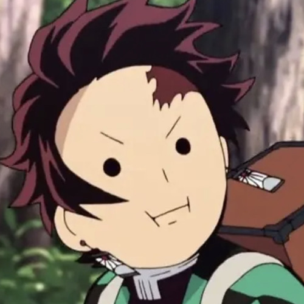

Kamado is a fictional character and the main protagonist in Koyoharu Gotouge's manga Demon Slayer: Kimetsu no Yaiba. Tanjiro is a teenager who goes on a quest to restore the humanity of his sister, Nezuko, who was turned into a demon after his family was killed by Muzan Kibutsuji following an attack that resulted in the death of his other relatives. After an encounter with Giyu Tomioka, a demon slayer, Tanjiro is recruited by Giyu to also become a demon slayer to help his sister turn human again and avenge his family. link
"All Of Your Emotions, I'll Carry Them Into The Battlefield."